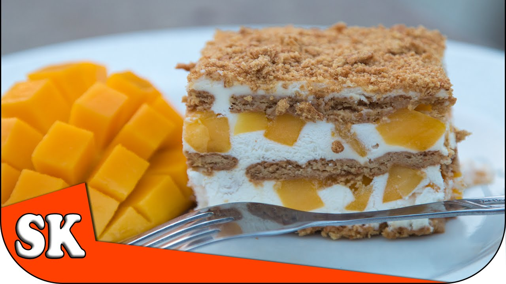

Graham Cake

Description
The cake does needs to be made in advance so, keep that in mind. The graham
crackers need time to soak up the frosting and become tender. I always love
when desserts can be made in advance, which is so convenient for holidays,
parties and special occasions. Make this up to 2 days in advance and it’s
one less thing on your to-do list. The pretty layer of grated chocolate
adds a nice flavor to the cake and looks so pretty.
Ingredients:
- Honey graham crackers
- Sour cream
- Heavy cream
- Powdered/confection
- Vanilla extract
- Chocolate Bar
Steps:
- Combine NESTLÉ All Purpose Cream and Nestle® Carnation® Condensada.
Put 2 tbsp of the mixture on the glass dish
- Arrange 12 pieces of Graham Crackers in the glass dish. Then top
with the cream mixture. Cover first layer with mango
- Repeat procedure to form 2 layers. Keep in the refrigerator for 4
hours or until the graham is moist with cream.
- Slice into serving portions before servings